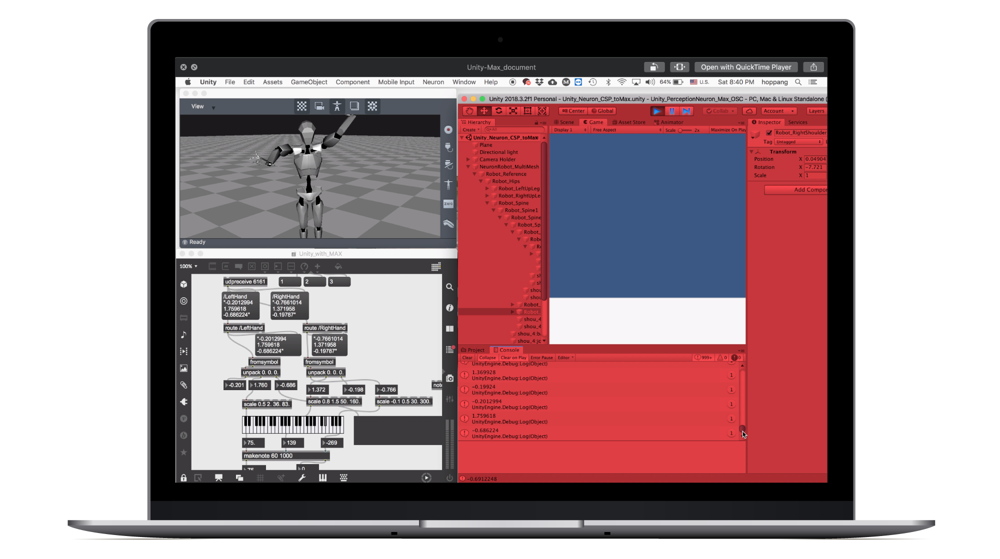
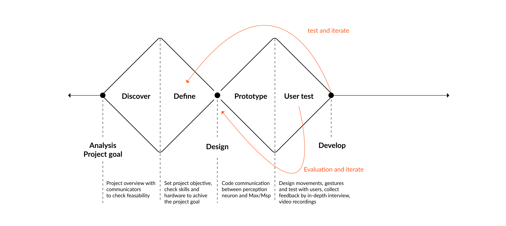
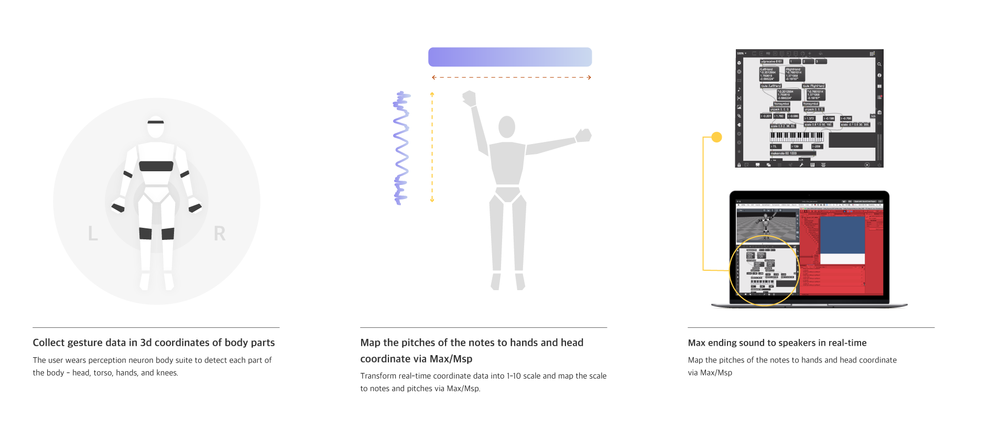
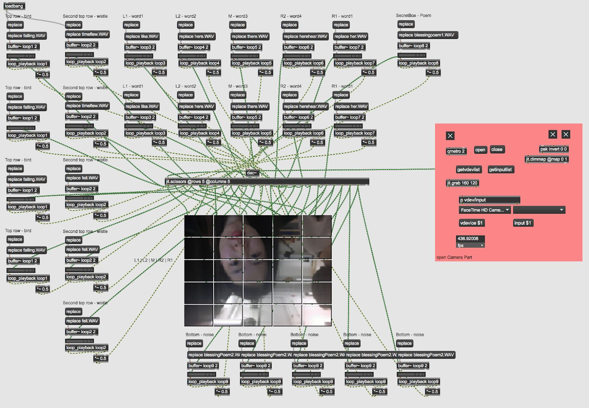
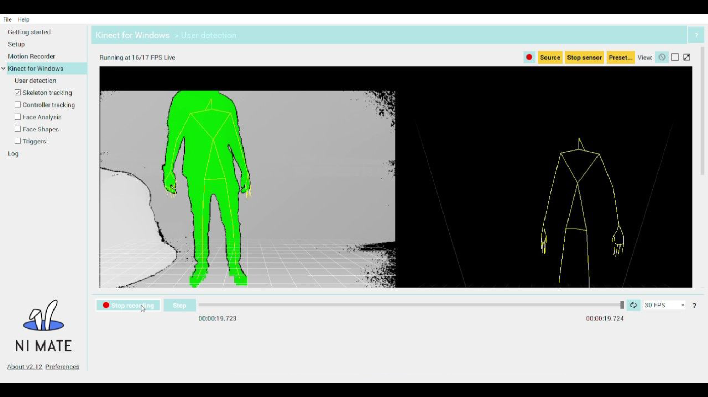

Generate sound from your body, transforming your gesture into sonic experience.

This project aims to explore the interaction between body gesture and virtual sound space.
In the Project, I Mapped coordinates that incorporate data into the sound system and use Max
as an intersecting platform which connects a motion with corresponding data that can be transformed
into sound. In this environment, space becomes an instrument which gesture can play with.
Over the span of this four-week project, we explored the whole body gesture with text.
From this perspective, we got inspiration from sign language system and we want to connect hand,
upper body gesture, and whole body motion with words, sentences.
|| Interactive Sound Project - Max with Movement, CSP Group Project
|| Youngin Sa, Lingzi Zheng, Mark Cetilia
|| Jan 2019 - Feb 2019
|| Perception Neuron, Max/Msp, C#
|| Personal Contribution: UX Research, Max/Msp Design

The project intends to transform the movement that inhabits personal but also a historical story into sound
and images. Specifically, I am interested in exploring and visualizing invisible contents which are mapped into
space. Engaging the body with space with a gesture, coordinates generated from movements become a trigger to send
corresponding data inherent in space. This site-specific project is based on the thought of how culture and
history we shape our perspective while we are not aware of it.
Throughout four-weeks, the project will focus on experimenting various ways to connect motion with Max.
Specifically technical investigations including
camera tracking with kinect will be done to construct a foundation of the project. Based on the research from this project,
in the future, I expect to move forward to create an art project which is integrating the movement of the performer with
a text which is mapped to the space that will generate sound.
|| Sean Nealon - Scripting UDP communication in C#
|| Shawn Greenlee - Sound system in room M11
|| Athena Zeros - Performance, Gestures, Body Movements, Poetry
The system was designed in a sequence of communications from Gesture (perception neuron 3D motion capture) - OSC communication
via Max - map with sound in Msp - spacial speaker set. 3D coordinates captured from the body were given as decimal numbers.
The data needed to be filtered in order to communicate clearly in real-time.
The project was intended to perform live, therefore, sculpting data into a scale of 1 to 10 whole numbers was required
for real-time movement-sound transformation. Camera detection in Max was aligned with 3D motion capture to control the specific
spatial sound that is mapped to certain parts of the camera view.

Maxmsp camera tracking patch and use the position data to control sound and master system view in real-time.

Two movements - Moving and Jumping were designed for project demonstration.
Moving gesture focusing on the head and torso part of the body was using a synthesizer to generate sound.
Notes, and pitch of the notes, volumes, each property was mapped to left and right hands, and head.
The intend was to force specific movements to play the composition, at the same time create variations by
gestures on-site, live.
Jumping was designed to make participants jump to a certain level to hear the narration in an order. In the set,
the noise - which is the narration playing backward, is playing that can not be heard. A designed indication
will give a clue that participant should jump to a specific point, triggering the noise to play in order,
transforming into the narrative.
